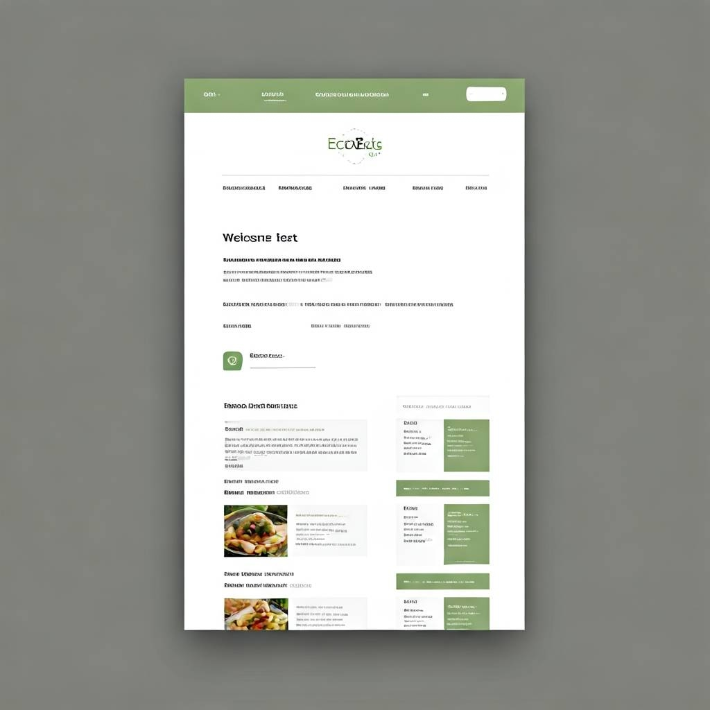
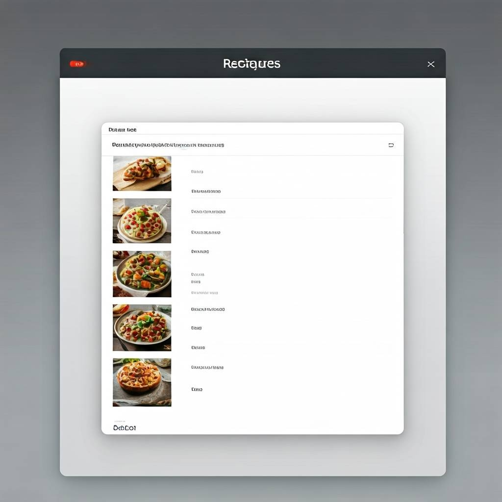

Overview
Purpose
EcoEats is a simple recipe website that promotes sustainable, plant-based cooking. Users can discover and filter recipes, get random suggestions, and learn about local seasonal ingredients.
Audience
Environmentally-conscious cooks, students, and busy families looking for healthy, budget-friendly meal ideas that support sustainability.
Dynamic elements
JavaScript will be used to display a random recipe, allow users to filter recipes by dietary preference or ingredients, and include interactivity like star ratings. ES Modules will organize functionality, and we'll use arrays, objects, DOM manipulation, and conditional logic.
Branding
Website Logo

Style Guide
Color Palette
Palette URL: https://coolors.co/1d7874-030027-f2f3d9-92898a-c16e70| Primary | Secondary | Accent 1 | Accent 2 |
|---|---|---|---|
| #1d7874 | #030027 | #f2f3d9 | #c16e70 |
Typography
Heading Font: IM Fell French Canon SC
Paragraph Font: Lato
Normal paragraph example
EcoEats is committed to making plant-based cooking easy and enjoyable. All recipes are optimized for seasonal and local ingredients to reduce environmental impact.
Colored paragraph example
Sustainability starts in the kitchen. By eating more plants and less meat, you contribute to a cleaner, greener planet—one meal at a time.
Navigation
Content
Home Page
The homepage will include a welcoming message, a randomly selected recipe preview, and information about the purpose of the website. It will contain call-to-action buttons like "See Recipes" or "Get Started."
Recipes Page
This page will show a list of recipes stored in an array of objects. Users can filter by diet type (vegan, vegetarian, etc.), rating, or ingredients. Clicking a recipe reveals more details.
Wireframes
Home
The home page wireframe includes a banner, brief welcome text, a random recipe card, and a navigation menu at the top.
Recipes Page
The recipes page will have a list/grid of recipe cards, each showing a preview image and title. A sidebar or topbar will contain filtering options.
